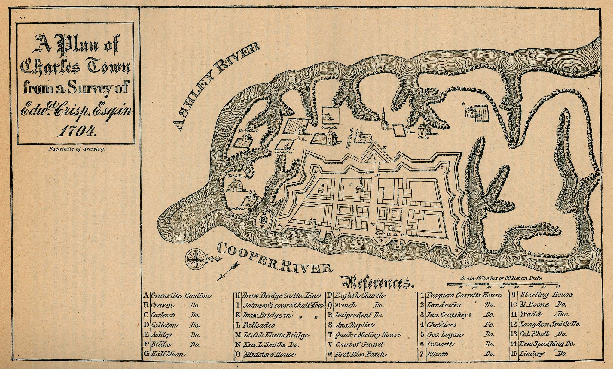
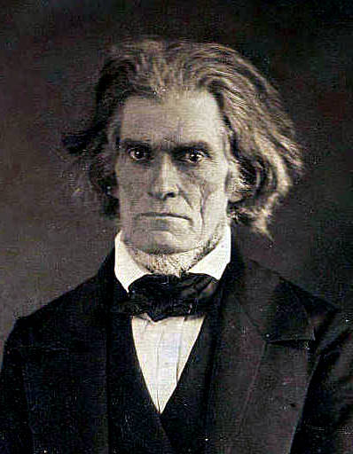
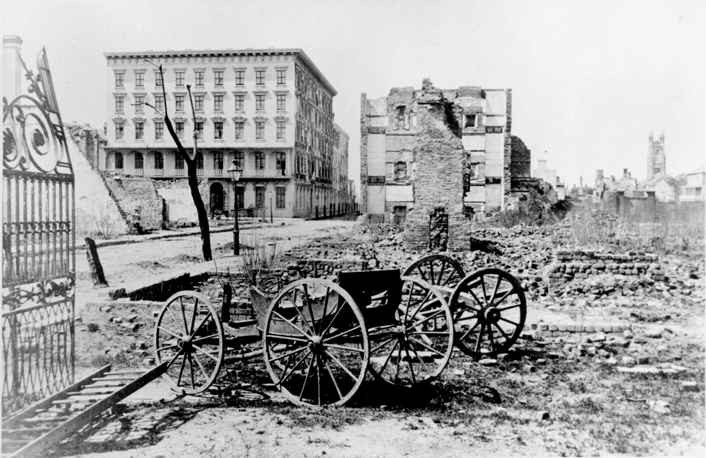

|
The capital of South Carolina, and one of the South's most prominent cities before the
Civil War, Charleston became a hotbed of militant pro-slavery sentiment during the
antebellum era, earning the sobriquet "cradle of secession."
Charleston is situated on the peninsula formed by the confluence of the Ashley and
Cooper Rivers. The city's low elevation and proximity to two large rivers allowed as many
as 350 ships at a time to gather offshore for loading and unloading of cargoes. Charleston
thus emerged as one of the most significant commercial centers in the South before the
Civil War--an important producer of cotton and other agricultural products, one of the
major hubs of Southern shipping, and the locus of manufacturing in the state. Charleston's
prime location came with a cost, however. As it is surrounded by water, summers in the
city are unbearably humid. Further, the marshes surrounding the town are prime breeding
grounds for mosquitoes. Outbreaks of disease were a common occurrence in antebellum
Charleston; between 1800 and 1860, for example, there were 25 separate yellow fever
epidemics.
|

A 1704 map of Charleston shows the extensive
waterway access the surrounding terrain affords the city, making it ideal
for shipping, but also for mosquitoes.
|
The census of 1800 documented that Charleston was home to 10,104 African Americans—more
than 2,000 of them free, the rest enslaved—and 8,820 whites. It was the largest city in
the South at the time, and the fifth largest in the nation. Through 1820, Charleston grew
rapidly thanks to a boom in rice and cotton prices, which led to an influx of more than
40,000 slaves into the city and its surrounding area. After 1820, however, the population
of Charleston stagnated, largely because of the extreme unhealthiness of the area. As a
consequence, by the outbreak of the Civil War, the city was no longer the South's largest,
having been overtaken by Atlanta, Mobile, and New Orleans.
The makeup of Charleston's population was unusual in comparison to other Southern
cities. The town was dominated by a small group of white planters, many who came to the
city from Barbados and Jamaica during the Revolution. These planters spent only the winter
months in Charleston—which, over time, became a rollicking social season—and then
relocated to Boston or New York City to escape the punishing summer weather. Charleston's
less affluent white residents came from England, Ireland, Germany, France, Scotland, and
the Caribbean. Each of these groups brought elements of their own cultures and
institutions with them; for example, German Jewish immigrants established what was by 1830
the largest synagogue in America. Given the diverse mix of religions and nationalities in
Charleston, and its strong cultural ties to the cities of the North, the city was very
cosmopolitan by the standards of the day.
Charleston also had an unusually large and prominent free black population; in this
regard, its only parallel among the cities of the antebellum South was New Orleans. By
1850, Charleston was home to 500 slave-owning mulattoes and another 3,000 free African
Americans. These individuals formed a sort of aristocracy among the town's 50,000 black
citizens. They had their own social clubs and churches, looked down their noses at the
enslaved, and identified themselves with the planter class of Charleston.
Besides the plantation owners and the small black elite, most Charlestonians were poor.
In fact, the distribution of wealth in Charleston was more unequal than in any other city
in the nation before the Civil War. The planters were absent half the year, but when in
town they lived among a sea of white laborers and African-American slaves without property
or rights. Such circumstances quite naturally conspired to create an unusually high level
of paranoia among Charleston's elite, and fears of an insurrection were constant. These
fears were realized in 1822 when a free black man named Denmark Vesey was accused and
convicted of plotting a slave revolt among the African-American inhabitants of Charleston.
|

John C. Calhoun, photographed late in his life
|
Vesey and several accomplices were executed, ending the immediate threat, but from that
point forward, white Charlestonians were the most vocal and reactionary population to be
found anywhere in the South.
These sentiments were capitalized upon by the most prominent Charlestonian of the
antebellum era, politician John C. Calhoun. In 1832, for example, he led Charleston's
white elites in a statewide revolt against the Tariff of 1832, threatening to withdraw the
state from the Union if necessary. Though the crisis was amicably resolved, a precedent
had been set, and Charleston was the center of secessionist sentiment in the years leading
up to the Civil War. Until his death in 1850, Calhoun remained the unquestioned leader of
Charleston and of South Carolina, and the nation's most prominent advocate for Southern
rights. This made him the single most important and powerful political leader in the
antebellum South.
Despite its prominence in national politics, and its cosmopolitanism, Charleston was
intellectually a backwards town. The city did have a pair of newspapers—the Charleston
Courier and Charleston Mercury—but no important journals or magazines. Its only
prominent man of letters was William Gilmore Simms, who often complained that he was
forced to look elsewhere for intellectual stimulation, as none was to be found in
Charleston. The city had no public libraries and a fairly limited commitment to public
funded education, though residents did make the College of Charleston the first
municipally supported college in the United States in 1856.
In 1859, John Brown's attack on the federal arsenal at Harpers Ferry whipped the
planter elite of Charleston—always on edge—into a fury, and they became convinced that an
attack on the city was imminent. This led to the formation of the Charleston Vigilance
Association, as planters turned against the other residents of their town. For over a
year, much time was spent harassing slaves, the free African Americans in the city, and
sometimes even "traitorous whites." These efforts were intensified when Abraham Lincoln
was nominated for the presidency; Charleston police undertook systematic interrogations
and door-to-door searches, and free black citizens who could not provide proof of their
status were summarily returned to slavery.
Once Lincoln was elected to the Presidency, leaders from across South Carolina met in
Charleston to plot a course of action. On December 20, 1860 they issued an ordinance of
secession, advising the rest of the country that South Carolina was no longer part of the
United States. The six other states of the "Lower South" soon followed South Carolina's
lead. Four months later, the first shots of the Civil War were fired, appropriately
enough, in Charleston Harbor.
During the Civil War, the Union Army made several attempts to take Charleston, but was
rebuffed--most notably at the Battle of Secessionville in June 1862 and the Battle of Fort
|

A photograph of the damage done to Charleston
by Union invaders in February 1865
|
Wagner in July 1863. The Union Navy was equally stymied, and the city remained an
important center of blockade running until late in the war. Among the naval engagements
that took place in Charleston waters was the first successful submarine attack in history,
when the Confederacy's H.L. Hunley made a daring attack on the USS
Housatonic in the evening hours of February 17, 1864.
Charleston finally fell to the Union Army on February 18, 1865, during Maj. Gen.
William T. Sherman's "March through the Carolinas." Six weeks later, the Civil War came
to an end. The defeat of the Confederacy brought an end to the city's enormous influence
on the South and on national politics. Charleston would never again return to the level of
prominence it enjoyed before the Civil War.
Source: Christopher Bates for the History 139A website.
|